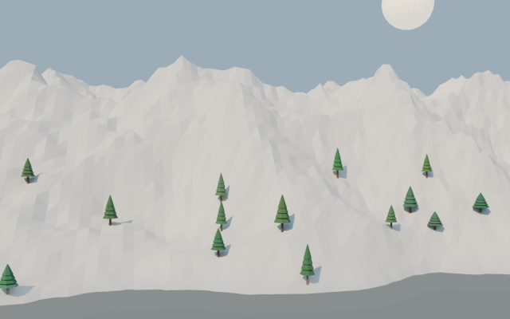
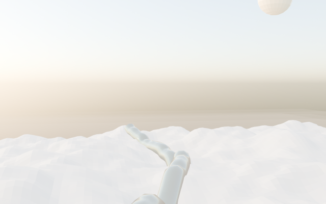
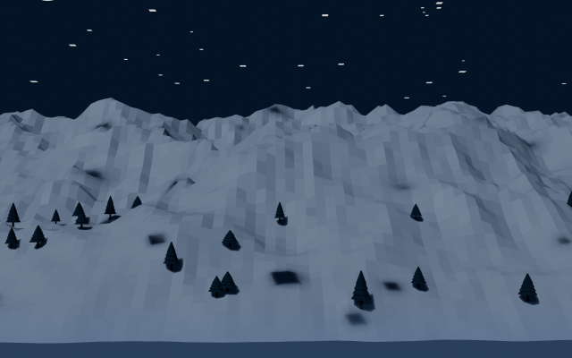
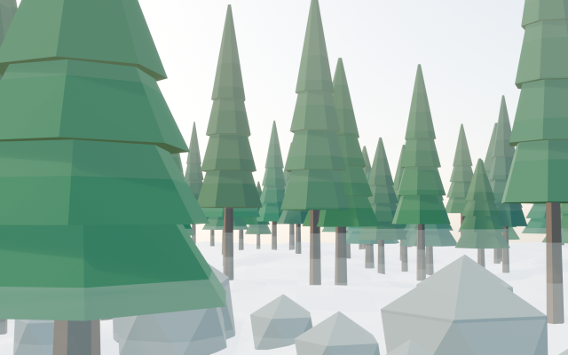

Progression
Early studies
Smaller experiments from before the Ancient Forest final. Shown for context — they are not the current quality benchmark.




These four renders are test-tier work. The Ancient Forest final is the quality reference.